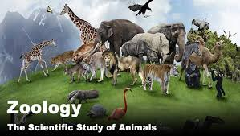
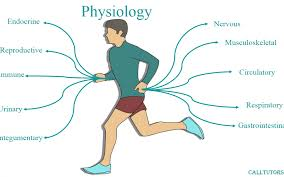

study about subjects
| English | Urdu | Math |
|---|---|---|
| English is a language that started in Anglo-Saxon England. It is originally from Anglo-Frisian and Old Saxon dialects. English is now used as a global language. There are about 375 million native speakers (people who use it as their first language) in the world. | Urdu, also known as Lashkari, or the Lashkari language (لشکری زبان) is the national language of Pakistan and a recognized regional dialect in India. Urdu is an Indo-Aryan language, which means that it came from Proto-Indo-Aryan, a language that was spoken northeast of the Caspian Sea in the second millennium BCE. | |
| Why English is important in our life? ENGLISH is a universal language and is spoken in many countries in the world. English is the official language of 45 countries in the world. Communication is very important in today's time; English provides the medium for all the cultures to communicate through books, movies, plays, internet o | What is history of Urdu? Urdu developed in the 12th century ce from the regional Apabhramsha of northwestern India, serving as a linguistic modus vivendi after the Muslim conquest. Its first major poet was Amir Khosrow (1253–1325), who composed dohas (couplets), folk songs, and riddles in the newly formed speech, then called Hindvi. | Mathematics is the science and study of quality, structure, space, and change. Mathematicians seek out patterns, formulate new conjectures, and establish truth by rigorous deduction from appropriately chosen axioms and definitions. |
| What are 5 interesting facts about English?More people have learned English as their second language than there are native English speakers in the world. ... A new word is added to a dictionary every two hours. ... Shakespeare introduced over 1 000 new words to the English language. ... The average English speaker knows between 20 000 and 30 000 words. | What is special about Urdu?As a literary language, Urdu took shape in courtly, elite settings. While Urdu retained the grammar and core Indo-Aryan vocabulary of the local Indian dialect Khariboli, it adopted the Nastaleeq writing system – which was developed as a style of Persian calligraphy. | |
| how old is english Language?approximately 1,400 years old The English language is approximately 1,400 years old. It originated from a West Germanic language and was brought over to Britain in the mid 5th century by the Anglo Saxons (during a migration).td> | How old is Urdu language?Urdu started developing in north India around Delhi in about the 12th century. It was based on the language spoken in the region around Delhi, and it was heavily influenced by Arabic and Persian, as well as Turkish. | What are the 4 types of math? The main branches of mathematics are algebra, number theory, geometry and arithmetic. Based on these branches, other branches have been discovered. Before the advent of the modern age, the study of mathematics was very limited. |
| science | social studies | computer |
|---|---|---|
| science, any system of knowledge that is concerned with the physical world and its phenomena and that entails unbiased observations and systematic experimentation. In general, a science involves a pursuit of knowledge covering general truths or the operations of fundamental laws. | Social studies can also be referred to as social sciences. It's a field which deals with human behavior, relationships, resources, and institutions. Specific topics within social studies that are studied in school coursework include geography, anthropology, economics, history, sociology, political science, and civics. | A computer is a machine that can be programmed to automatically carry out sequences of arithmetic or logical operations (computation). Modern digital electronic computers can perform generic sets of operations known as programs. These programs enable computers to perform a wide range of tasks. |
| Why is science important? Science generates solutions for everyday life and helps us to answer the great mysteries of the universe. In other words, science is one of the most important channels of knowledge. types of physical science 1:Physics. 2:Chemistry. 3:Earth science. 4:Astronomy. 5:Biochemistry. 6:Microbiology. 7:Botany. 8:Zoology. | Who is the father of social studies? Emile Durkheim, however, is revered as the founder of social science since he laid the groundwork for actual social study in the field of sociology. | What is computer history? A computer is a machine that can be programmed to automatically carry out sequences of arithmetic or logical operations (computation). Modern digital electronic computers can perform generic sets of operations known as programs. These programs enable computers to perform a wide range of tasks. |
| Who is father of science? Galileo Galilei—The Father of ScienceOf course, the meaning of the word “science” has changed over time. “We don't know exactly who coined that term first,” Goldsby said. “Although, we do know that it was philosopher William Whewell who first coined the term 'scientist.14-Nov-2017 Of course, the meaning of the word “science” has changed over time. “We don't know exactly who coined that term first,” Goldsby said. “Although, we do know that it was philosopher William Whewell who first coined the term 'scientist. | Why is social studies so important?The primary purpose of social studies is to help young people develop the ability to make informed and reasoned decisions for the public good as citizens of a culturally diverse, democratic society in an interdependent world. | What is the importance of computer in your life as a student? Computers are pivotal in equipping students with essential skills for the modern world. Proficiency in using computers and digital tools is not just an advantage but a necessity. It opens doors to various career opportunities and empowers students to thrive in an increasingly digital workforce. |
branches of science
| biology | chemistry | physics |
|---|---|---|
| Biology is a branch of science that deals with living organisms and their vital processes. Biology encompasses diverse fields, including botany, conservation, ecology, evolution, genetics, marine biology, medicine, microbiology, molecular biology, physiology, and zoology | Chemistry is the study of substances—that is, elements and compounds—while biology is the study of living things. However, these two branches of science meet in the discipline of biochemistry, which studies the substances in living things and how they change within an organism. | Physics is a branch of physical science that involves the study of matter and its motion and behavior through space and time, along with related concepts such as energy and force; in other words, understanding how the universe behaves. |
| what is the importance of biology?As a field of science, biology helps us understand the living world and the ways its many species (including humans) function, evolve, and interact. Advances in medicine, agriculture, biotechnology, and many other areas of biology have brought improvements in the quality of life. | what is the importance of chemistry?Chemistry is essential for meeting our basic needs of food, clothing, shelter, health, energy, and clean air, water, and soil. Chemical technologies enrich our quality of life in numerous ways by providing new solutions to problems in health, materials, and energy usage. | what is the importance of physics?Physics provides quantitative and analytic skills needed for analyzing data and solving problems in the sciences, engineering and medicine, as well as in economics, finance, management, law and public policy. |
| What are 3 types of biology?Botany- It deals with the study of plants. Zoology- It deals with the study of animals. Microbiology- It deals with the study of microorganisms who is the father of biology?Aristotle is regarded as the Father of Biology. He is also regarded as the Father of Zoology. He started classification with two kingdoms Animal and Plantae. | who is the father of chemistry and why?The real father of chemistry is Antoine Lavoisier. He is known as the father of real chemistry because he listed elements, found oxygen is crucial for combustion, described the properties of matter, and helped to standardize and revise nomenclature in chemistry. | Who is father of physics? Galileo Galilei, an Italian scientist and mathematician, is often referred to as the "Father of Physics" due to his significant contributions to the field |
botany
botany, branch of biology that deals with the study of plants, including their structure, properties, and biochemical processes. Also included are plant classification and the study of plant diseases and of interactions with the environment.The importance of Botany It helps in medicine and cosmetic. Botany is essential for the creation of biofuels such as biomass & methane gas, which can be used to replace fossil fuels. It helps farmers to increase crop yield. The Study of Plant is important for environmental protection.
zoology
Zoology involves the study of animals. Not just any study, but how to classify animals, their history, their anatomy and physiology, their development, and so much more. Just like there are many components to zoology, there are many branches of zoology and tools zoologists use to do their job well.What is the importance of zoology Through the study of zoology, you can gain an understanding of the natural world and how we can help with conservation. It also offers the opportunity to consider ways to face global challenges such as climate change and food security, trying to find solutions to help both animals and humans alike.
physiology
Physiology is a branch of biology that studies how all living organisms, including humans, operate. It asks why our bodies have certain functions — like breathing or digesting food — and aims to understand how all of our different organ systems work to keep us alive and healthy importance of physiology Physiology is an experimental scientific discipline and is of central importance in medicine and related health sciences. It provides a thorough understanding of normal body function, enabling more effective treatment of abnormal or disease states. We use innovative teaching methods to enhance our teaching. .
botany
.jpg)
zoology

physiology

Dropdowns
.